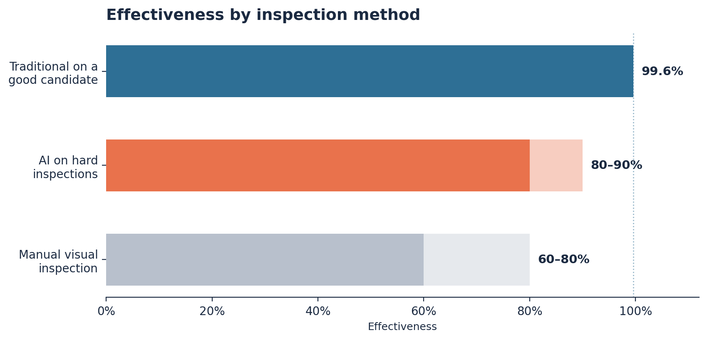
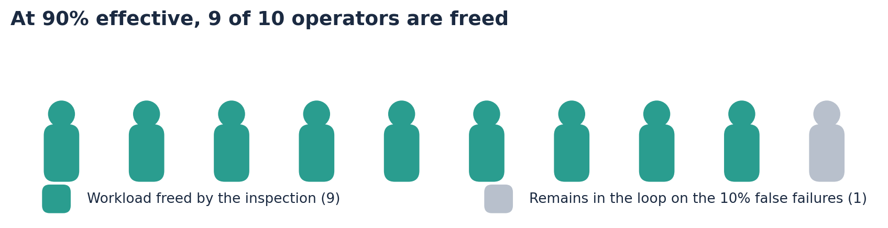

Do I Need AI Machine Vision, or Not?
Interest in AI and machine vision is widespread, and a large number of AI software companies focused on machine vision have emerged over the last five years. This raises two questions for a manufacturer. Do I need AI machine vision for my process, and what alternatives exist to it?
Start by defining success
Before answering that, we need to define what constitutes success in a machine vision application. Success is typically an automated inspection system, with no human involved, that fails every part that should fail and passes every part that should pass, within reason. Within reason means the system can permit some false failures in order to ensure that it produces no false passes, without impairing the ability to produce parts.
Consider the extreme case. Failing 100% of parts would certainly contain every bad part, but it is not a practical solution, because it fails too many good parts. A system like that is quickly turned off or put into bypass.
An acceptable benchmark is therefore required. For mature machine vision companies, the benchmark used for validation is typically zero false passes and four false failures for every 1000 parts produced, a 0.4% false failure rate. That figure is generally what you design toward in machine vision.

The industry target for a high-volume camera deployment: zero false passes, and no more than four false failures per thousand parts.
What alternatives exist to AI
Two main alternatives to AI inspection exist. The first is smart camera inspection, which uses standard industrial cameras that run the software inspection tools onboard. Smart cameras are used heavily in industry for simpler inspections, such as verifying the presence or absence of a particular feature, or confirming model type. The second is PC-based vision, which still relies on traditional machine vision toolsets.
Traditional rules-based inspection versus AI
The difference between traditional rules-based inspection and AI inspection comes down to how the inspection is defined. A rules-based inspection can be quantified. For example, the system might look for a feature that is at least 50 pixels in diameter and made up of pixels below a certain brightness value. Those are rules.
A practical example is a metal surface on which defects present themselves as darker than the surrounding material. The program might flag any surface defect greater than 50 pixels by 50 pixels that falls beneath a certain brightness level. That inspection is easily described with quantitative rules, which makes it a traditional inspection.
AI inspection works differently. It uses neural networks and supervised learning to classify or segment defects.
| Traditional, rules-based | AI vision | |
|---|---|---|
| Parts to start | A handful, often fewer than 30, sometimes one or two | Hundreds to a thousand labeled images |
| Getting to working | Program on samples, then groom limits for about one week | Build a machine, collect weeks of production, then train |
| Integration path | Proven on your samples at factory acceptance, then deployed | Only imaging can be validated at factory acceptance |
| Maintenance | Deterministic. A failure traces to a defined threshold | Harder to diagnose. The main lever is the training data |
| Cost | Mature, cheaper over time, rarely a subscription | Many platforms include a recurring element |
| Best fit | Defects you can describe with measurable rules | Defects you cannot describe with rules |
The pros of traditional vision
The major advantage of traditional vision is that it requires far fewer parts to train a working system. A traditional system is generally programmed on a handful of sample parts, typically fewer than 30 and sometimes as few as one or two. On those example parts, the programming is roughly 95% complete. You set up the camera, produce an image, and program the rules-based inspection, such as the darkness example above, which gives you the foundation of a working program. From there, you turn on the inspection system, run production, and adjust the inspection limits to match acceptable production variation until you achieve your false pass and false fail targets.
This process aligns with the typical expectations for a machine build. A handful of sample parts can be given to a system integrator, who programs the camera and demonstrates that it works on those parts before deployment to production. Only marginal support is then required to adjust results as production runs. That grooming amounts to changing the limits. Instead of the 50 by 50 pixel minimum defect from the earlier example, the limit might move to 51 by 53 in order to fail the production parts that should fail and pass the ones that should pass. The result is a far more straightforward integration path, and one that most companies already recognize from buying and validating custom equipment.
The second advantage of traditional vision is that it is simpler and more straightforward to maintain. When a part fails, there is a deterministic reason for the failure. The defect area detected by the camera exceeded a threshold defined in the program, which is easy to understand and to root cause. AI is harder to diagnose. In a classification example, where the system labels a part as either good or bad, a misclassification may have no obvious cause, and the only real lever is the training data, meaning the example images provided as good parts and bad parts. That is much harder for plant teams to debug, and it naturally requires far more sample parts.
The third advantage of traditional vision is cost. It has been in use for a long time, the products have grown cheaper over time, and it has been adopted widely. Traditional rules-based inspection is rarely sold as software as a service, whereas the majority of AI platform providers include some recurring element. This is not true of every provider, but it is common.
The catch with AI is the deployment
The integration path for AI systems is far more back-heavy. A working machine must first produce images of production parts before the hundreds of sample parts needed to train an effective AI model can be gathered. Synthetic data can help with this problem, but at least as of 2026, virtually every synthetic data company Vista has tried has failed to improve AI model results any more than collecting additional production data would have.
The effect on the timeline is significant. A traditional build follows a clean sequence. The machine is built on the system integrator floor, validated with the samples on hand, turned on in production, and groomed for roughly one week to reach a fully working solution at 99.6%. AI pathways are riskier and less straightforward. You design the machine with its cameras and confirm that it is triggering, but at factory acceptance testing you do not have a working model, because there is not sufficient part data to create a general use case AI model. All that can be validated at the factory acceptance phase is that the image acquisition system works and the images are of good quality. Once the machine reaches production, several weeks of production must be collected, after which the model is trained, validated, and debugged. Integrating a working AI system can therefore take several more weeks than a traditional system.

Traditional vision is proven before it ships. An AI model cannot be trained until a working machine is already producing parts.
A further disadvantage of AI inspection is that it generally requires far more images to produce the same pass and fail results a traditional system achieves on a straightforward application. This makes AI particularly challenging for new manufacturing processes, where images of the product do not yet exist and feasibility is difficult to test.
Where AI is the right tool
For very hard inspections, particularly those that cannot be described quantitatively or with a series of rules, AI may be the only option. In a number of cases, traditional tools either false fail too many parts or fail to catch all of the true defects that must be caught. Where traditional vision is inadequate, AI becomes a strong candidate.
In some cases, AI is also faster to program and to bring to results than traditional vision. Grooming can take a very long time depending on the inspection, and an AI tool may be quicker. This is highly inspection dependent, and it again falls into the category of problems not easily solved with traditional machine vision, where AI tools can be the better candidate.
AI means changing your standards
The standard for traditional vision is 99.6% effective, a level achieved across much of manufacturing on applications that are good candidates for it. Once an inspection moves beyond that difficulty level, both the standard and the process have to change.
For a difficult AI defect inspection, an outcome of 80% effective, false failing 20% of parts, or 90% effective, false failing 10% of parts, can be very good. This is particularly true because human operators are generally considered only 60 to 80% effective, as they either fail too many parts or miss critical failures through lapses in attention. AI is a strong candidate for inspections that only need to be 85 to 95% effective and that have a process in place for handling false failures.

The standard has to move with the difficulty of the inspection. A hard AI inspection still beats the manual baseline it replaces.
That process generally requires a human in the loop to manually verify whether each false failure is a genuine reject. The verification also supplies continued training data that allows the AI to improve over time. It is a more cumbersome process, and the operator cannot be removed immediately. Most successful AI applications keep an operator in the loop for six months, twelve months, or even permanently, depending on the difficulty of the inspection.
The productivity gains come from reducing the operator's workload rather than eliminating the role at once. If an inspection is 90% effective and only the 10% false failures require review, 90% of the operator's time has been freed. On a process that previously required ten operators, nine can be recovered, which makes the case for AI.

Even at 90% effective, the payoff is real. The gain comes from reducing operator workload, not from removing the operator at once.
At the same time, the fact that AI solves harder problems requires accepting lower standards. Inspections cannot be counted on to be 99.6% effective, so an operator or subject matter expert must be planned into the loop for an extended period. This is both a con and a pro of AI. It solves harder problems than were previously possible, but it cannot be held to the same expectation of 99.6% effectiveness out of the gate that traditional machine vision meets. It requires different process design and different expectations.
The takeaways
Traditional rules-based logic carries many advantages over AI machine vision, and the recommended approach is to use traditional vision and simpler tools wherever possible. A complex solution should not be placed where a simple one will do. The hype around AI has drawn many people into the vision space, and as a result AI is being used to solve problems that traditional machine vision should solve. That is one of the main points of this article.
The second point is that the AI deployment life cycle is generally longer and more cumbersome, and it is unlikely to align with what most teams expect from traditional machine vision systems. AI generally takes longer to deploy, and much longer to reach 99.6%, than most traditional systems. This depends on the inspection, but it holds true in general.
Because AI is generally used to solve harder problems, it also demands different planning. Handling false failures requires a different approach, and a higher number of false failures should be expected. Rather than planning to remove the operator within one or two weeks of installation, plan on false failing a higher number of rejects and on diminishing returns from the model. Reaching 80 or 90% effectiveness may be achievable, but the final 10% can take several months or even years, depending on the complexity of the application. Manufacturing processes should be planned around keeping an operator in the loop for longer.
The final point is that AI is difficult to implement in processes without a large volume of training data. Any product being manufactured for the first time is difficult for AI, because a capable model usually requires several hundred to a thousand images. AI is best suited to processes that have run for a long time and that are heavy on manual inspection, where cameras can be introduced onto an existing line to collect data before feasibility is tested, rather than applied to a new product whose feasibility is unknown.
Continuous improvement efforts are excellent candidates for AI. However, if traditional tools can perform a continuous improvement inspection on an existing line, that route should still be pursued first, for the reasons given above. Traditional vision is more deterministic and easier for plants to maintain. Use a simpler tool wherever you can.